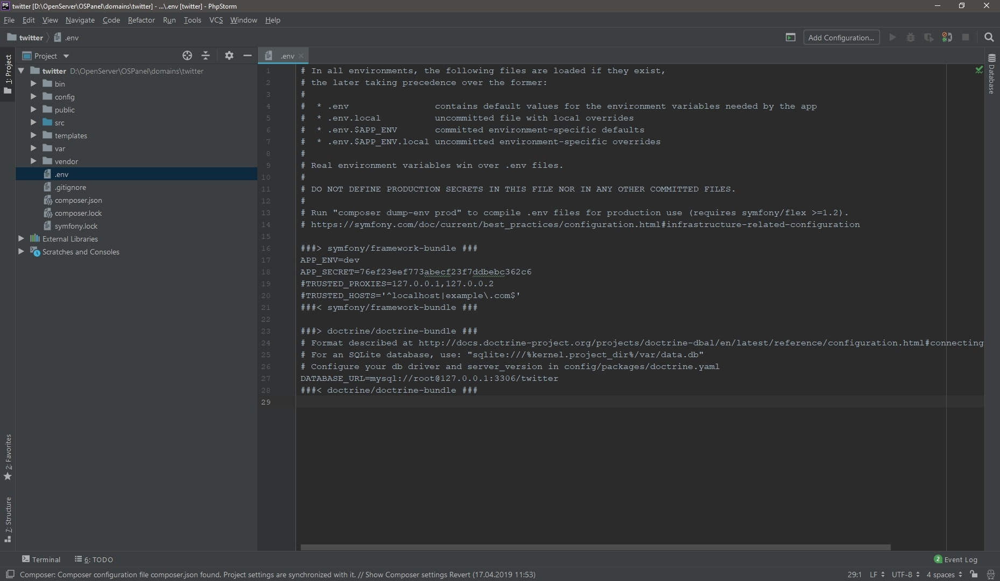

Structure Symfony
Создание базы данных
Для работы с БД нам потребуется подключить рецепт doctrine,
который включает в себя:
- - doctrine/orm;
- - doctrine/bundle;
- - doctrine/doctrine-migrations-bundle.
Если ранее вам приходилось работать с Active Record, то доктрина может показаться знакомой. Doctrine – это некий слой абстракций для работы с БД. Например, если голый sql синтаксис выглядит так:
INSERT INTO 'users' VALUES (login='Иван', password='vanya228');
то с Doctrine это будет выглядеть следующим образом:
$user = new User();
$user->setName("Иван");
$user->setPassword("228");
$entityManager->persist($user);
$entityManager->flush();
Работая над учебным проектом вы получите необходимый минимум, но все же это достаточно обширная тема, рекомендую познакомиться с ней поближе.
Итак, подключаем вышеуказанный рецепт через команду консоли
composer require doctrine.
В случае успешной установки увидим сообщение
"Modify your DATABASE_URL config in .env".
Открываем файл конфигурации .env и видим снизу блок
doctrine/doctrine-bundle.
В строке DATABASE_URL нужно указать конфиг к БД,
в моем он случае выглядит так:
DATABASE_URL=mysql://root@127.0.0.1:3306/twitter

Если пароля нет, убираете все вместе с точками. Базу можете назвать как хочется.
Пишем последнюю команду и готово, база создана.
php bin/console doctrine:database:create